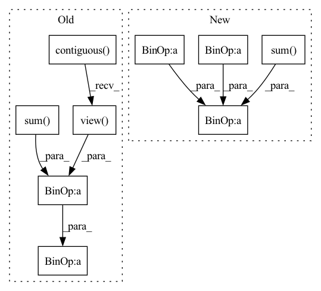

Pattern ID :1732
Before Change
inputs = F.softmax(predict, dim=1)
//flatten label and prediction tensors
inputs = inputs.contiguous().view( -1)
targets = targets.contiguous().view(-1)
intersection = (inputs * targets).sum()
dice = (2.*intersection + self.eps)/(inputs.sum() + targets.sum() + self.eps)
loss = 1 - dice
After Change
labels = batch["targets"].to(device)
inputs = F.softmax(predict, dim=1)
tp = torch.sum( labels*inputs, dim=(2, 3))
fn = torch.sum(labels*(1- inputs), dim=(2, 3))
fp = torch.sum((1- labels)*inputs, dim=(2, 3))
dice_score = (tp + 1e-6) / (tp + fn + fp + 1e-6)
dice_score = torch.sum(1 - dice_score, dim=-1)
loss = dice_score / labels.shape[1]
loss_dict = {"DICE": loss.item()}
return loss, loss_dictIn pattern: SUPERPATTERN
Frequency: 3
Non-data size: 9
Instances Fragment ID: 6828649
Project Name: kaylode/theseus
Commit Name: c3db2b8a1f42a342eede55c654350ea11a6a6c6e
Time: 2022-02-19
Author: pmkhoi@selab.hcmus.edu.vn
File Name: theseus/segmentation/losses/dice_loss.py
M Class Name: DiceLoss
N Class Name: DiceLoss
M Method Name: forward(4)
N Method Name: forward(4)
M Parent Class: nn.Module
N Parent Class: nn.Module
M File Name: theseus/segmentation/losses/dice_loss.py
N File Name: theseus/segmentation/losses/dice_loss.py
M Start Line: 12
M End Line: 23
N Start Line: 14
N End Line: 24
Before Change
Returns:
loss: An average loss value masked by the length.
input = input.contiguous()
target = target.contiguous()
// logits_flat: (batch * max_len, dim)
input = input.view(-1, input.shape[-1])
// target_flat: (batch * max_len, dim)
target_flat = target.view(-1, target.shape[-1])
// losses_flat: (batch * max_len, dim)
losses_flat = functional.l1_loss(
input, target_flat, size_average=False, reduce=False)
// losses: (batch, max_len, dim)
losses = losses_flat.view( *target.size())
// mask: (batch, max_len, 1)
mask = sequence_mask(
sequence_length=length, max_len=target.size(1)).unsqueeze(2)
losses = losses * mask.float()
loss = losses.sum() / (length.float().sum() * float(target.shape[2]))
return loss
After Change
sequence_length=length, max_len=target.size(1)).unsqueeze(2).float()
mask = mask.expand_as(input)
loss = functional.l1_loss(
input * mask, target * mask, reduction="sum")
loss = loss / mask.sum()
return loss
class MSELossMasked(nn.Module): Fragment ID: 6828669
Project Name: coqui-ai/tts
Commit Name: a15b3ec9a18377bf67356a9b5c29f4b767001d05
Time: 2018-08-13
Author: erengolge@gmail.com
File Name: layers/losses.py
M Class Name: L1LossMasked
N Class Name: L1LossMasked
M Method Name: forward(4)
N Method Name: forward(4)
M Parent Class: nn.Module
N Parent Class: nn.Module
M File Name: layers/losses.py
N File Name: layers/losses.py
M Start Line: 25
M End Line: 42
N Start Line: 26
N End Line: 31
Before Change
Returns:
loss: An average loss value masked by the length.
input = input.contiguous()
target = target.contiguous()
// logits_flat: (batch * max_len, dim)
input = input.view(-1, input.shape[-1])
// target_flat: (batch * max_len, dim)
target_flat = target.view(-1, target.shape[-1])
// losses_flat: (batch * max_len, dim)
losses_flat = functional.mse_loss(
input, target_flat, size_average=False, reduce=False)
// losses: (batch, max_len, dim)
losses = losses_flat.view( *target.size())
// mask: (batch, max_len, 1)
mask = sequence_mask(
sequence_length=length, max_len=target.size(1)).unsqueeze(2)
losses = losses * mask.float()
loss = losses.sum() / (length.float().sum() * float(target.shape[2]))
return loss
After Change
sequence_length=length, max_len=target.size(1)).unsqueeze(2).float()
mask = mask.expand_as(input)
loss = functional.mse_loss(
input * mask, target * mask, reduction="sum")
loss = loss / mask.sum()
return loss
Fragment ID: 6828773
Project Name: coqui-ai/tts
Commit Name: 4326582bb1e68480ef79a02abbf4bfacc3aadede
Time: 2019-03-06
Author: egolge@mozilla.com
File Name: layers/losses.py
M Class Name: MSELossMasked
N Class Name: MSELossMasked
M Method Name: forward(4)
N Method Name: forward(4)
M Parent Class: nn.Module
N Parent Class: nn.Module
M File Name: layers/losses.py
N File Name: layers/losses.py
M Start Line: 53
M End Line: 70
N Start Line: 54
N End Line: 59